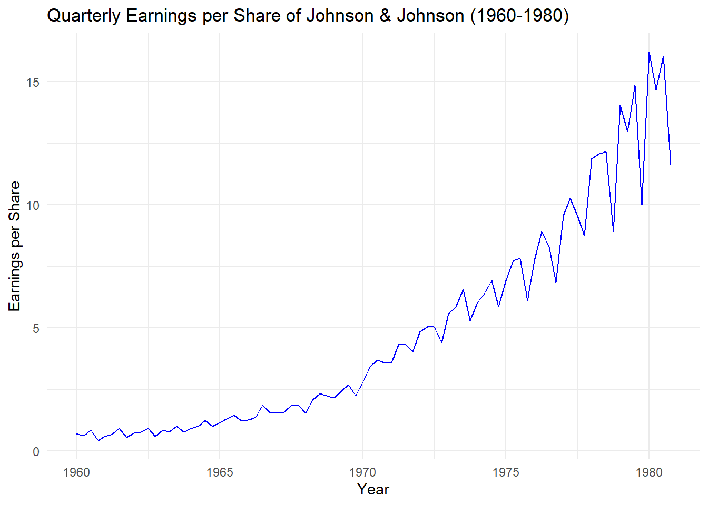
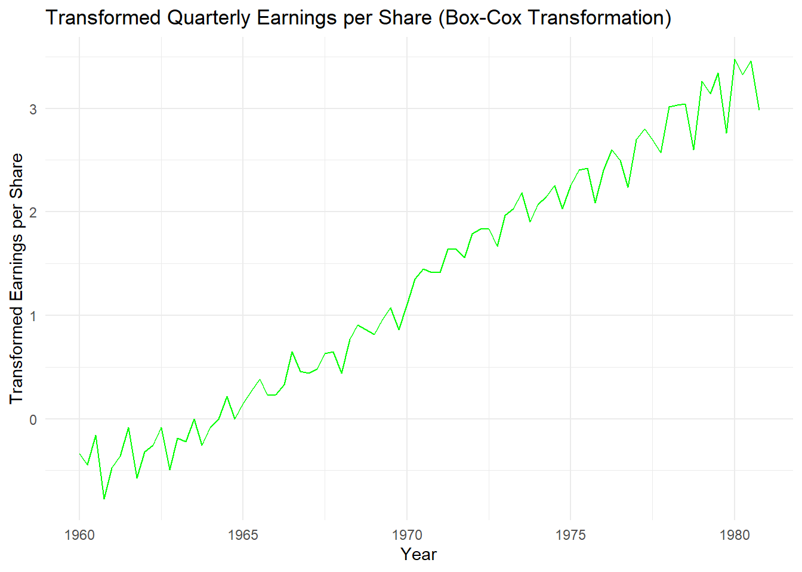
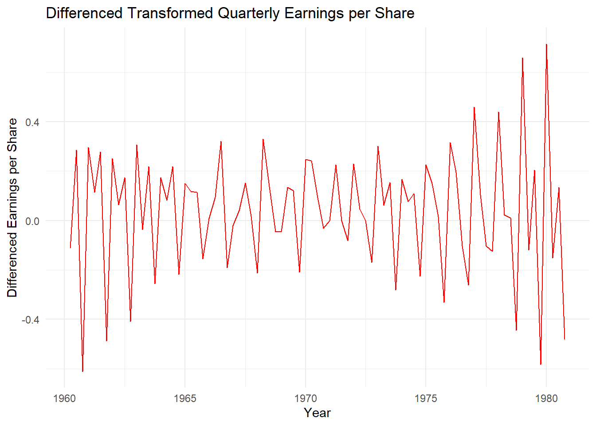
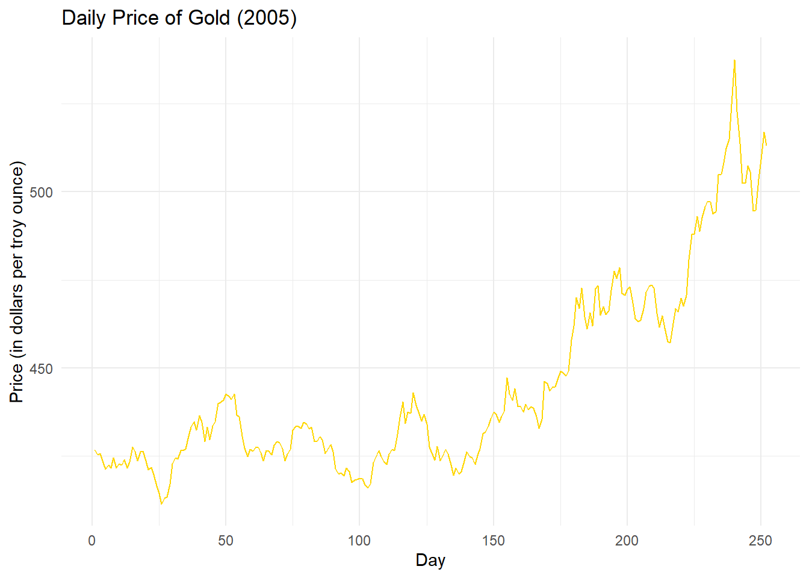
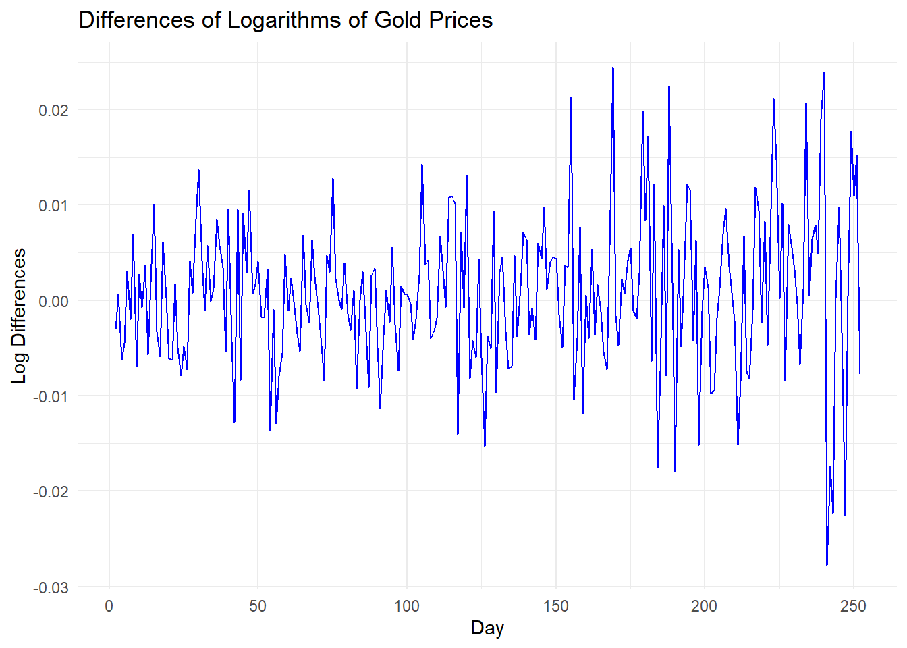
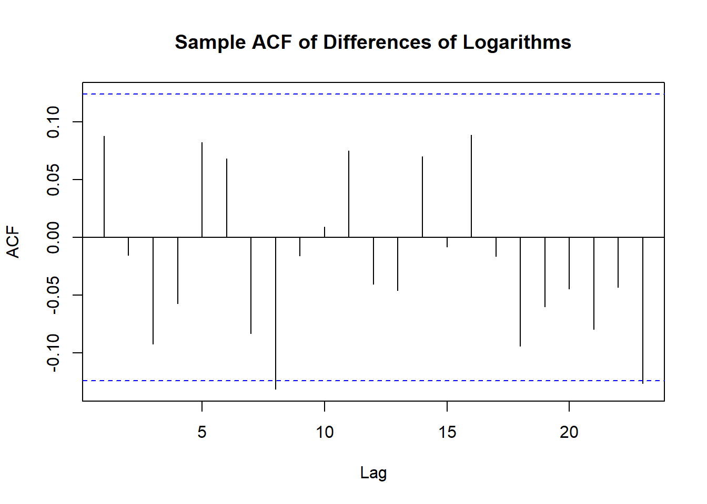
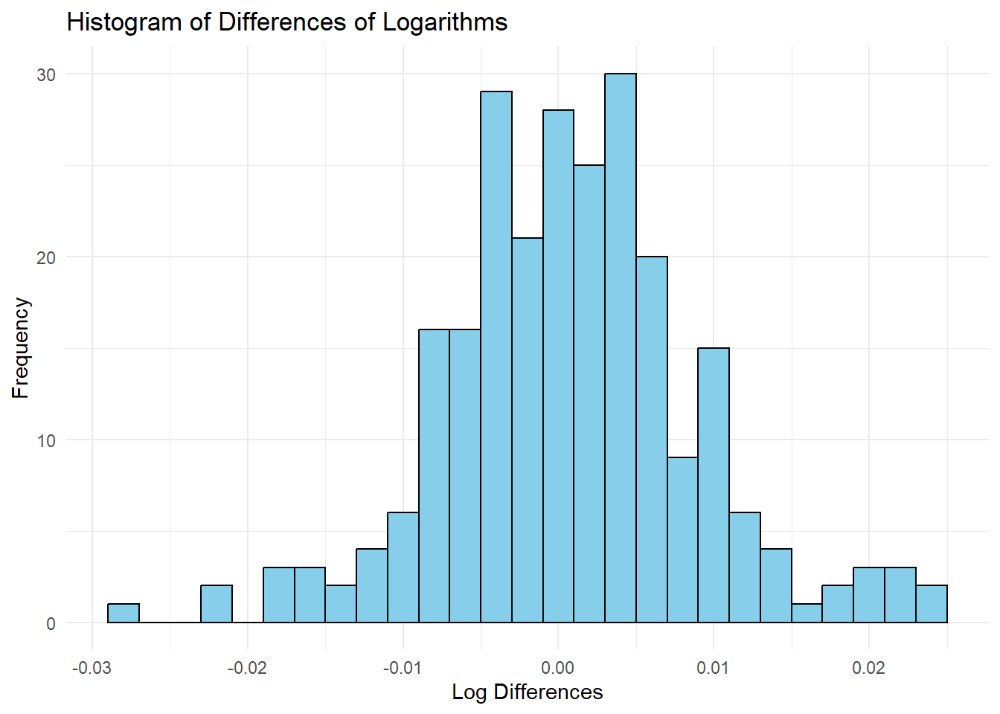

Identify the following as specific ARIMA models. That is, what are p,d, and q and what are the values of the parameters (the \(\phi\)’s and \(\theta\)’s)?
\[
Y_t = e_t + c e_{t-1} + c e_{t-2} + c e_{t-3} + \dots + c e_0
\]
Where ( e_t ) is white noise with ( E(e_t) = 0 ) and ( (e_t) = ^2 ) for all ( t ), and ( c ) is a constant.
Part (a) - Mean and Covariance Functions for ( {Y_t} )
1. Mean of ( Y_t )
The expectation of ( Y_t ) is:
\[
E(Y_t) = E(e_t + c e_{t-1} + c e_{t-2} + \dots + c e_0)
\]
Since the error terms ( e_t ) are white noise with ( E(e_t) = 0 ), we have:
\[
E(Y_t) = 0
\]
Thus, the mean of ( Y_t ) is:
\[
E(Y_t) = 0
\]
2. Covariance Function of ( Y_t )
The covariance between ( Y_t ) and ( Y_{t+h} ) is:
\[
\text{Cov}(Y_t, Y_{t+h}) = \text{Cov}\left( e_t + c e_{t-1} + \dots + c e_0, e_{t+h} + c e_{t+h-1} + \dots + c e_{t+h-3} \right)
\]
Since the error terms are independent, only the terms where the indices overlap contribute to the covariance. For ( h = 0 ) (the variance of ( Y_t )), we have:
# Part (a) Display a time series plot of the dataggplot(data =data.frame(Time = time_index, Earnings =as.numeric(jj)), aes(x = Time, y = Earnings)) +geom_line(color ="blue") +ggtitle("Quarterly Earnings per Share of Johnson & Johnson (1960-1980)") +xlab("Year") +ylab("Earnings per Share") +theme_minimal()
Don't know how to automatically pick scale for object of type <ts>. Defaulting
to continuous.

Use software to produce a plot similar to Exhibit 5.11, on page 102, and determine the “best” value of λ for a power transformation of these data.
# Part (b) Find the best value of lambda for a power transformationlambda <-BoxCox.lambda(jj)cat("Best value of lambda:", lambda, "\n")
Best value of lambda: 0.1540752
# Plot similar to Exhibit 5.11 (Box-Cox transformation plot)boxcox_results <-boxcox(jj ~time(jj), lambda =seq(-2, 2, 0.1))
Display a time series plot of the transformed values. Does this plot suggest that a stationary model might be appropriate?
# Part (c) Transform the data using the estimated lambda and plotjj_transformed <-BoxCox(jj, lambda)ggplot(data =data.frame(Time = time_index, Earnings = jj_transformed), aes(x = Time, y = Earnings)) +geom_line(color ="green") +ggtitle("Transformed Quarterly Earnings per Share (Box-Cox Transformation)") +xlab("Year") +ylab("Transformed Earnings per Share") +theme_minimal()
Don't know how to automatically pick scale for object of type <ts>. Defaulting
to continuous.
Don't know how to automatically pick scale for object of type <ts>. Defaulting
to continuous.

Display a time series plot of the differences of the transformed values. Does this plot suggest that a stationary model might be appropriate for the differences?
# Part (d) Difference the transformed data and plotjj_diff <-diff(jj_transformed)diff_time_index <- time_index[-1]ggplot(data =data.frame(Time = diff_time_index, Earnings = jj_diff), aes(x = Time, y = Earnings)) +geom_line(color ="red") +ggtitle("Differenced Transformed Quarterly Earnings per Share") +xlab("Year") +ylab("Differenced Earnings per Share") +theme_minimal()
Don't know how to automatically pick scale for object of type <ts>. Defaulting
to continuous.

Ex 5.16
# Load necessary librarieslibrary(ggplot2)library(forecast)# Load the datadata("gold") # Johnson & Johnson quarterly earnings data from TSA packagegold <- goldgold
a) Display the time series plot of these data. Interpret the plot.
# Part (a): Time series plot of the gold pricesgold_df <-data.frame(Day =time(gold), Price =as.numeric(gold))ggplot(gold_df, aes(x = Day, y = Price)) +geom_line(color ="gold") +ggtitle("Daily Price of Gold (2005)") +xlab("Day") +ylab("Price (in dollars per troy ounce)") +theme_minimal()
Don't know how to automatically pick scale for object of type <ts>. Defaulting
to continuous.

Display the time series plot of the differences of the logarithms of these data. Interpret this plot.
# Part (b): Differences of the logarithms of gold priceslog_diff <-diff(log(gold))log_diff_df <-data.frame(Day =time(gold)[-1], LogDiff = log_diff)ggplot(log_diff_df, aes(x = Day, y = LogDiff)) +geom_line(color ="blue") +ggtitle("Differences of Logarithms of Gold Prices") +xlab("Day") +ylab("Log Differences") +theme_minimal()
Don't know how to automatically pick scale for object of type <ts>. Defaulting
to continuous.

Calculate and display the sample ACF for the differences of the logarithms of these data and argue that the logarithms appear to follow a random walk model.
# Part (c): Sample ACF for the differences of the logarithmsacf(log_diff, main ="Sample ACF of Differences of Logarithms")

Display the differences of logs in a histogram and interpret.
# Part (d): Histogram of the differences of logarithmsggplot(log_diff_df, aes(x = LogDiff)) +geom_histogram(binwidth =0.002, fill ="skyblue", color ="black") +ggtitle("Histogram of Differences of Logarithms") +xlab("Log Differences") +ylab("Frequency") +theme_minimal()
Don't know how to automatically pick scale for object of type <ts>. Defaulting
to continuous.

Display the differences of logs in a quantile-quantile normal plot and interpret.
# Part (e): Quantile-Quantile (Q-Q) plot for the differences of logarithmsqqnorm(log_diff, main ="Q-Q Plot of Differences of Logarithms")qqline(log_diff, col ="red")